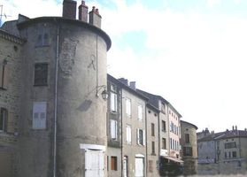
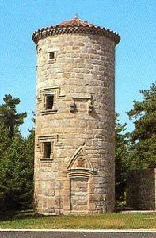
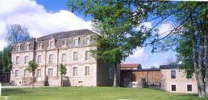
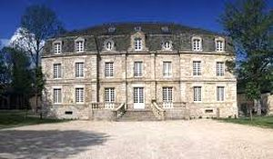
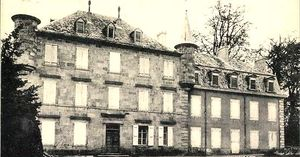
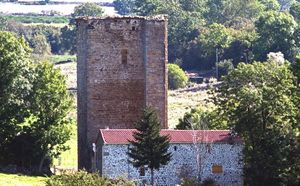
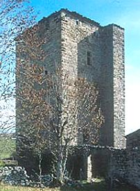

Recensement Jean-Claude Truffet
| Département | 48 — Lozère |
| Canton | Langogne |
| Commune | Langogne |
| Type d'édifice | Château |
| Période d'origine | XVII |







LANGOGNE, la viguerie de Langogne est dirigée par le Vicomte Étienne et sa femme Angelmode. Langogne devient ville de consulat et obtient ses libertés et ses magistrats. D'abord administrée par un conseil politique composé d'un Maire, de deux assesseurs, de quatre consuls et quatre conseillers, un édit de 1771 vient établir officiellement le rôle du maire. Il reste toutefois au seigneur la justice et la puissance territoriale. Il faudra attendre les États Généraux, en 1789, et la Révolution pour voir le département de la Lozère crée. Le premier maire, Jean Bourguignat de Chabaleyre a poursuivi son mandat quelques mois suivi par Jean Louis Mathieu. Il faut attendre 1815 où l'on évoque le nouveau maire appelé monsieur de Colombet de Landos, lieutenant colonel et chevalier de Saint-Louis, grand administrateur de la commune. C'est lui qui érige la Halle aux grains et la Tour de l'Horloge. BARRES; ou vécut la famille de Colombet de Landos en 1895-1895, aujourd'hui, hôtel restaurant, domaine de Barres. NAUSSAC, Ancien château dépendant de l'abbaye des Chambons VIGERIE; propriété également de Colombet de Landos en 1833-1898, aujourd'hui en société par Assenat Philippe qui occupe le poste d'exploitant agricole, l'élevage de bovins et de buffles CONCOULES, Lavillatte était le siège dune commanderie des Hospitaliers de Saint-Jean-de-Jérusalem. Cétait une propriété de Chartreux, cédée aux Hospitaliers en 1231. En 1313, le commandeur était Aymon de Montlaur. Lavillatte fut rattachée au Grand Prieuré de Saint-Gilles-du-Gard, lors de la réorganisation qui a suivi la transmission aux Hospitaliers des biens des Templiers, au début du XIVe siècle.
Langogne, vestiges des remparts, deux tours rondes à trois niveaux côté nord accolé à des bâtiment, plus tour indépendante de Naussac également à trois niveaux et bretèches. Barres; gentilhommière du XVIIIe siècle revue et transformée par larchitecte de renom Jean-Michel Wilmotte. De forme rectangulaire à deux niveaux et attiques deux pavillons saillants sur façade, toiture à la Mansard. Vigerie; corps de logis de plan rectangulaire à trois niveaux et attiques, pour le premier corps a toiture en croupe avec échauguettes en angles, prolongement du corps de logis à trois niveaux toiture en croupes. Concoules, ruines imposantes d'un château seigneurial reste d'une tour, extérieurement, la tour a encore fière allure. Haute dune vingtaine de mètres, de dix mètres de côté, elle est construite en pierres de granit soigneusement appareillées. Les fenêtres sont rares, mais assez grandes ; la plupart sont agrémentées de moulures, un linteau est décoré dune accolade et il semble quil y ait eu des meneaux à certaines dentre elles. Un escalier extérieur à double volée permettait daccéder au premier étage, mais il nest plus quun tas de pierres. Lintérieur de la tour est ruiné, car la toiture sest effondrée en 1986 sous le poids de la neige et na pas été remise en état. On remarque encore que la plupart des pierres dangles sont à bossage et peut-être certaines étaient-elles sculptées. Il sagissait donc dune construction soignée.
Seigneurs locaux Jean Bourguignat de Chabaleyre"
Tour dans les remparts de Langogne, château de la Barres, la tour de Naussac, tour de Concoules et château de la Vigerie